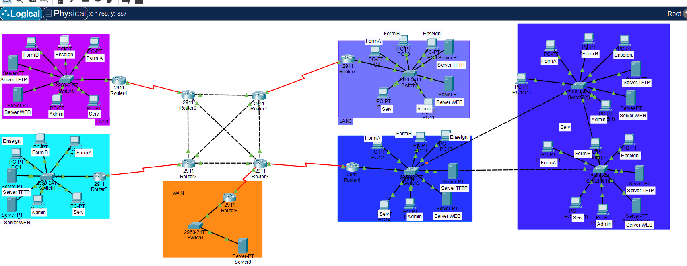
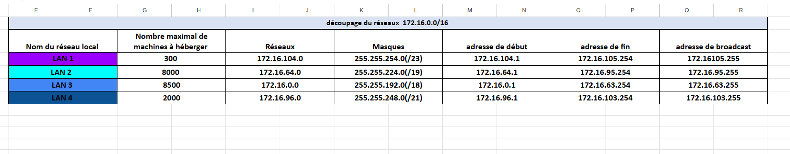
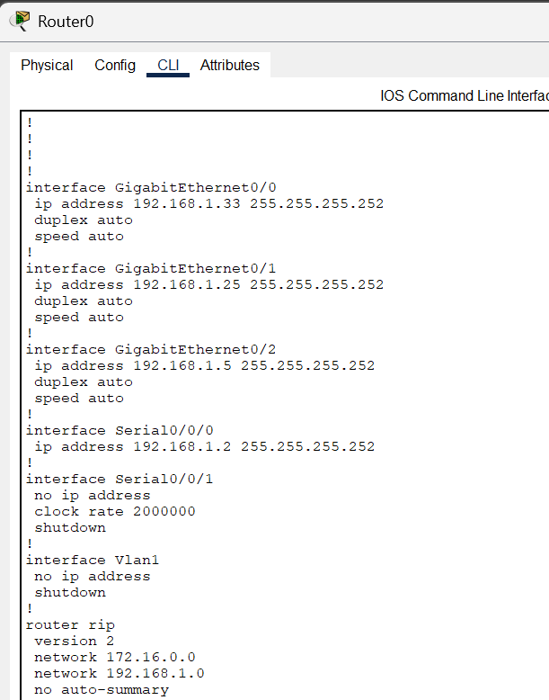
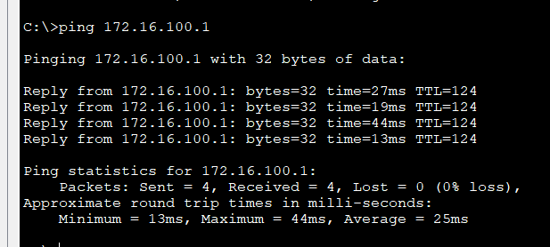

E-Portfolio de Compétences
🔎 Analyse Globale - Compétence : Administrer les systèmes informatiques
Mise en place et maintenance des infrastructures systèmes, gestion des services réseaux et des environnements virtualisés.
Dossier de Preuves Techniques - SAE 2.01
1. Topologie du Réseau Inter-sites

Architecture globale reliant les 4 sites sous Packet Tracer.
2. Plan d'Adressage IP

Structuration des sous-réseaux et masques pour chaque bâtiment.
3. Configuration du Routage Inter-sites

Mise en œuvre du protocole RIP sur les routeurs principaux.
4. Tests de Connectivité (Pings)

Validation de la communication de bout en bout entre les services.
Analyse Réflexive : SAE2.01
1. Contexte et Objectifs
Dans le cadre de cette SAE, l'objectif était de concevoir et configurer l'infrastructure réseau d'une école multi-sites (Carnot, Métare, Roanne, Tréfilerie). Ce projet m'a permis de mobiliser des compétences en administration système et réseau dans un scénario proche du monde professionnel.
2. Analyse Technique et Méthodologique
Planification et Adressage: La première étape a consisté à structurer un plan d'adressage IP en divisant le réseau en sous-réseaux par site. Cette phase de réflexion théorique était cruciale avant toute manipulation technique pour garantir l'optimisation des ressources.
Mise en œuvre des VLAN et Routage: J'ai configuré les switchs pour isoler les flux via des VLAN et mis en place le routage inter-VLAN sur le routeur. La réussite des tests de "Ping" entre différents services (ex: pc enseignant vers pc admin) a validé la justesse de ma configuration.
Interconnexion et Sécurité: L'utilisation du protocole RIP pour le routage dynamique inter-sites et la mise en œuvre de NAT et d'ACL ont permis d'assurer à la fois la communication globale et la sécurité du réseau.
3. Difficultés et Solutions
Complexité du routage:L'interconnexion de quatre sites distincts représentait un défi en termes de routage dynamique. En utilisant Packet Tracer pour simuler l'environnement, j'ai pu identifier les erreurs de configuration avant le déploiement virtuel final.
Gestion des boucles: L'implémentation du Spanning Tree Protocol (STP) a été nécessaire pour éviter les boucles réseau dues aux liens de redondance Gigabit, garantissant ainsi la continuité de service.
4. Bilan
Ce projet a été déterminant pour ma compréhension des infrastructures réseaux complexes.
J'ai appris à :Concevoir un réseau de bout en bout, de l'adressage à la sécurisation par ACL.
Travailler en collaboration (notamment lors de l'interconnexion avec les réseaux d'autres binômes via RIP).
Documenter une installation technique de manière rigoureuse pour en faciliter la maintenance future.
🔎 Analyse Globale - Compétence : Connecter les entreprises et les usagers
Maîtrise des protocoles de communication et configuration des équipements d'interconnexion (VLAN, NAT, Routage).
Configuration VLAN, routage inter-VLAN et NAT sous Packet Tracer.

🔎 Analyse Globale - Compétence : Programmer des outils et applications
Développement de solutions logicielles et scripts d'automatisation (Python, HTML/CSS, Symfony).